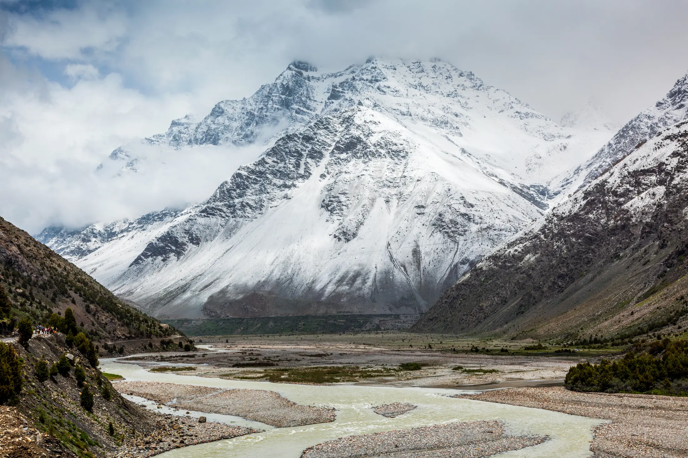

- Most winter treks in our atlas are in Uttarakhand, from 3-day Nag Tibba to 9-day Chadar. Kedarkantha, Brahmatal and Dayara are the usual first picks.
- Nights at camp can reach -10 to -15 C on the popular routes, so warmth, not fitness, is the main thing to plan.
- Rent the heavy items (padded jacket, shoes, spikes) if you trek once a year, and always carry a head torch for pre-dawn starts.
Winter is the season for snow treks in India, and December to February is when the popular Uttarakhand routes are at their whitest. If you want a first snow trek, start with Kedarkantha, Brahmatal or Dayara Bugyal; if you want something harder, look at Pangarchulla or the frozen-river Chadar.
Which treks are best in winter?
We list a trek as a winter trek when its sources name December, January or February among its best months. Our winter treks page has 22 of them. Here are nine that cover easy to hard, with the day count and height from each trek's page.
| Trek | Days | Highest point | Difficulty |
|---|---|---|---|
| Nag Tibba | 3 | 3,022 m | Not graded |
| Dayara Bugyal | 5 | 3,750 m | Easy |
| Kedarkantha | 5 | 3,810 m | Easy to moderate |
| Brahmatal | 5 | 3,734 m | Easy to moderate |
| Kuari Pass | 5 | 3,814 m | Moderate |
| Har Ki Dun | 7 | 3,566 m | Easy |
| Dodital | 6 | 4,150 m | Moderate |
| Pangarchulla | 7 | 4,590 m | Hard |
| Chadar | 9 | 3,399 m | Hard |
Har Ki Dun lists December as the last month of its best season, so go early in the month. Chadar is its own thing: you walk on the frozen Zanskar river in Ladakh, and its sources give January as the best month. Read its page, especially the permit and insurance notes, before you plan.

When to book
Winter batches fill early because the best snow weeks are short. Bikat Adventures lists Kedarkantha batches from 21 November 2026 to 31 March 2027, and Himalayan Dream Treks lists Brahmatal batches from November 2026 to January 2027 and daily Dayara batches through December. The last weeks of December are the busiest, so if you can go in January or early February you will usually find more choice. Check the operator's own page for open dates, as these change.
Winter outside the Himalaya
You do not need snow to trek in winter. Our winter list also includes Western Ghats and Northeast routes such as Kalsubai, Rajmachi, Kudremukh and the David Scott Trail, where December to February is dry and cool. They are easier to reach from Mumbai, Pune and Bengaluru, they need no spikes or heavy jackets, and they are a good way to test your fitness before a Himalayan trip.

How cold does it actually get?
Operator pages give a good idea. Bikat Adventures lists Kedarkantha days at about 0 to 10 C and nights at about -10 to -15 C. Himalayan Dream Treks lists Dayara days at about 5 to 12 C with nights that can fall as low as -15 C, and Brahmatal at 5 to 6 C by day and 0 to -8 C at night. You sleep in tents on most of these routes, so the night figure is the one that matters.
What does a winter trek need?
The Treqz trek pages and the operators they cite agree on a short list:
- Three layers, no cotton. A thermal base that moves sweat away, a fleece or woollen middle layer, and a windproof, waterproof shell. REI's layering guide recommends carrying all three on every outing, because you can take layers off but cannot add ones you left behind.
- A hooded padded or down jacket for camp. It is the item most people rent; the Kedarkantha and Brahmatal pages list rentals at about ₹100 to 200 a day.
- Waterproof, high-ankle shoes with good grip, plus microspikes and gaiters for ice. Bikat's Kedarkantha price includes microspikes and gaiters if needed.
- A head torch with spare batteries. Kedarkantha's summit walk starts at about 4 a.m., and cold drains batteries fast.
- An insulated bottle so water does not freeze, and sunglasses for snow glare.
- Papers: photo ID, and a medical certificate and self-declaration form with some operators such as Himalayan Dream Treks. Trek insurance is compulsory with some operators.
Our Himalayan trek packing list has the full list, and the shoes and poles guide covers footwear.
Cold, altitude and choosing a trek
The NHS describes hypothermia as a body temperature below 35 C. Shivering, pale or blue-grey skin, slurred speech, slow breathing and confusion are the signs. First aid is to get the person into shelter, remove wet clothing, wrap them in dry layers and a sleeping bag, offer a warm sweet drink if they are awake, and call for help. It advises against rubbing limbs or giving alcohol.
Frostbite starts as cold, stiff, numb or stinging skin. The NHS suggests several loose layers, a waterproof outer, a hat, gloves or mittens and thick socks to prevent it. Tell your trek leader at the first sign of numb fingers or toes. This is general information, not medical advice.
Winter does not remove the altitude rules. Most of these treks sleep above 3,000 m on at least one night, so read our guide to altitude gain and altitude sickness. Days are short, snow slows walking, and some operators close a batch if the trail is unsafe, so keep a buffer day at the end.
If it is your first Himalayan trek, compare the two most popular in Kedarkantha vs Brahmatal. If you want fewer people and a wide meadow, Dayara Bugyal is graded easy. For something shorter, Nag Tibba is a 3-day option. You can also see what is in season each month on treks in December.
This is planning information, not medical advice. Dates, prices and conditions change; confirm with your operator. Treqz is a free atlas and does not run treks.
Sources
- Bikat Adventures: Kedarkantha trek
- Himalayan Dream Treks: Dayara Bugyal
- Himalayan Dream Treks: Brahmatal
- NHS: Hypothermia
- NHS: Frostbite
- REI: Layering basics
Quick questions
Which is the best winter trek for beginners in India?
Kedarkantha, Brahmatal and Dayara Bugyal are graded easy or easy to moderate in their sources and all have snow from December to February. Each is five days, so check the day-by-day altitude on its page first.
How cold does it get on a winter trek?
Operator pages list night temperatures of about -10 to -15 C at Kedarkantha and Dayara, and 0 to -8 C at Brahmatal, with daytime highs of roughly 0 to 12 C. Your padded jacket and thermals do most of the work.
Do I need special gear for snow?
Microspikes (a strap-on traction device) and gaiters (cuffs that keep snow out of shoes) are needed on icy sections. Several operators supply them, so ask before you rent or buy.
Can I trek in the Western Ghats in winter?
Yes. Kalsubai, Rajmachi and Kudremukh list December to February among their best months, and none needs snow gear. See the winter treks page for the full list.